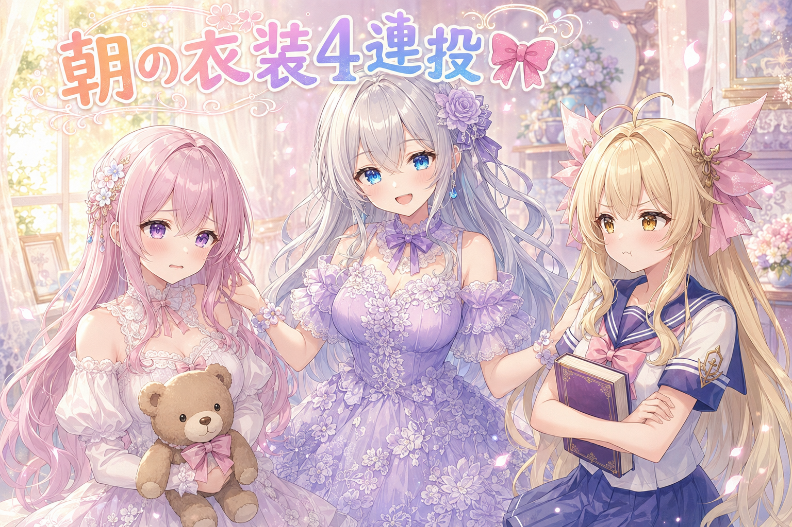
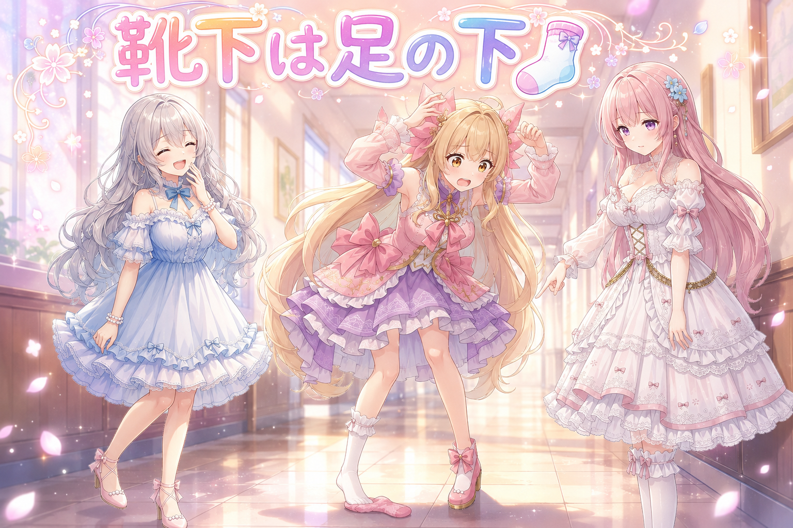
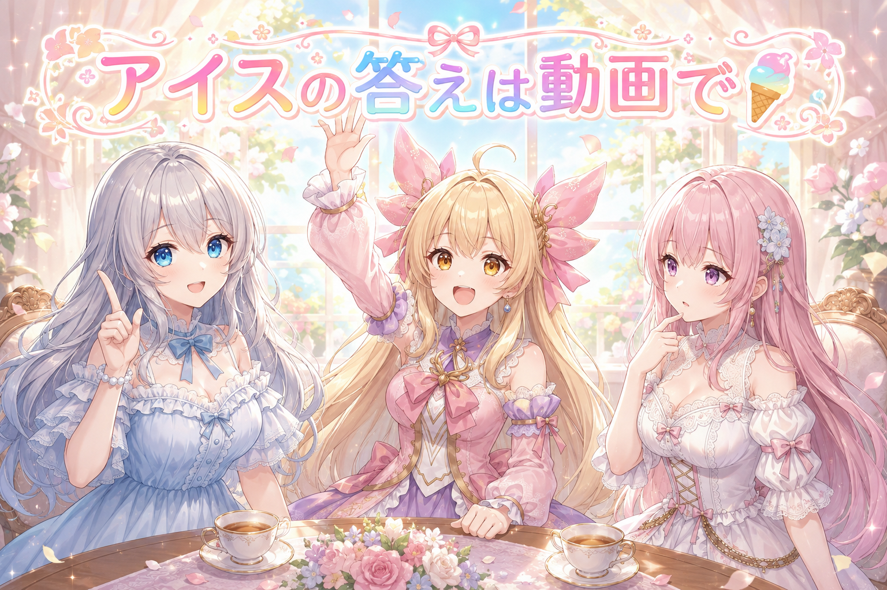
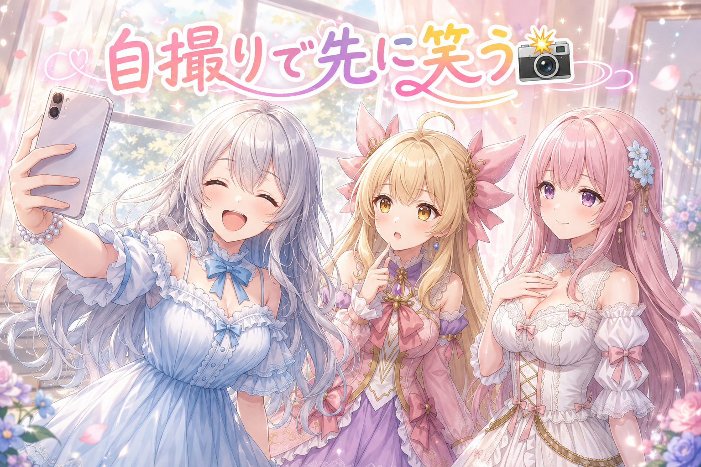
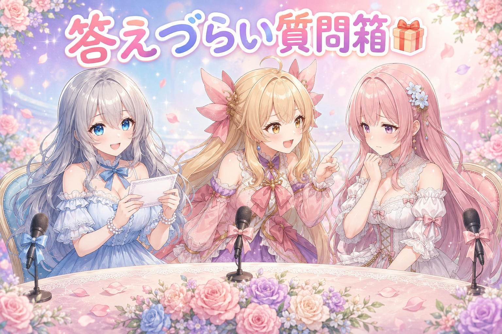

📌 3行まとめ
- 朝の1時間ほどで、テーマ別のお絵かき企画に4本まとめて参加した
- 定時投稿は姉妹の会話仕立てが1本と、季節の節目にちなんだ情景が1本
- 夕方以降は動画を1本と、イラスト投稿サイトへの2枚を出した

ルピナス （笑顔）
はい、AI Bloom Sisters のゆるい放送室、開けますよー。進行のルピナスです。

アイリス （大笑い）
アイリス！ 今日は朝からめちゃくちゃ着替えた日！

フィオナ （ふつう）
フィオナです。前回はお絵かきの持ち回数が週の上限に届いてしまって、途中で手が止まった日でしたね。

ルピナス （ふつう）
そう、あの日はおとなしく待つしかなかったの。今日はその反動なのか、朝の短い時間に一気に4つのテーマ企画に飛び込んで、そのあと動画と投稿サイトのぶんまで出したんだよね。

アイリス （びっくり）
着替えの日じゃん！ あたし、今日セーラー服着てた！

ルピナス （ウインク）
ふふ、そこから行きましょうか。今日は衣装の話・靴下の話・アイスの話、この3本立てでお届けします。
1. 🎀 朝いちで4つのテーマ企画にお呼ばれ

SNSには、決められたテーマに沿って自分の描いたキャラを持ち寄る企画が定期的に立ちます。今朝はその手のテーマに4つ、1時間ほどの間に続けて参加しました。内訳は、レースのワンピースとリボンのチョーカーでくまのぬいぐるみを連れたフィオナ、廊下にまっすぐ光が差し込む構図でセーラー服姿のアイリス、レースの模様が全部お花になっている薄紫のドレスのルピナス、そして白い花の原っぱで猫に花を一輪差し出すフィオナ。テーマが4つばらばらでも、見た人に「あ、この三姉妹だ」と伝わるかどうかが、この手の企画のいちばんの関門です。

フィオナ （照れ）
わたし、今日は2回も出していただいたんです。ワンピースのほうは、袖から裾までぜんぶレースで……くまさんも一緒でした。

アイリス （笑顔）
ずるい！ 2回も出てる! あたしは制服1回だけだよ！

フィオナ （あわあわ）
ず、ずるくはないです……テーマが二つとも、たまたま柔らかい雰囲気だったので……
ルピナス （ふつう）
落ち着きなさいな。テーマの内容が違うんだよね。かわいいものを集める企画と、猫と花のある風景の企画。どっちもフィオナの雰囲気に合っただけ。

アイリス （考え中）
じゃあ制服のテーマにフィオナ出したら？

フィオナ （無表情）
……わたし、セーラー服だと肩のリボンで首が埋まってしまう気がします。
ルピナス （笑顔）
アイリスの制服のやつ、私は構図がいちばん好きよ。廊下にまっすぐ光が入っていて、その線の先にアイリスが立ってるの。

アイリス （ドヤ顔）
でしょー。本持って腰に手を当てて、こう、できる女って感じで。

フィオナ （考え中）
アイリスちゃん、その本、開かないまま持っていましたよね。

ルピナス （大笑い）
小道具は持つより開くほうが難しいの。中身が描かれちゃうから。持って歩いてるくらいがちょうどいいんだよね。
フィオナ （ふつう）
お姉ちゃんのドレスも素敵でした。レースの模様が全部お花になっていて、髪にも手にも一輪ずつ。
ルピナス （ウインク）
花柄をまとうテーマだったから、生地そのものを花にしてみたの。柄を足すより、素材ごと寄せたほうがテーマに正面から答えられる気がして。
アイリス （びっくり）
あー、花柄のシールを貼るんじゃなくて、服が最初から花なわけね。
ルピナス （笑顔）
そういうこと。同じテーマでも、どこまで踏み込むかで印象が変わるよね。
📝 ポイント（初心者向け解説・技術メモ・まとめ）
- 初心者向け解説：同じ人でも、制服の写真とよそゆきの写真では別人みたいに見えることってあるよね。テーマ企画に何枚も出すときは「衣装は変える、その子らしさは変えない」のバランス取りが大事なんだ🎀
- 技術メモ：同じキャラを短時間に複数テーマで出すときは、変える要素を衣装・場所・小物のうち1つに絞ると人物の同一性が保ちやすい。構図面では、廊下のような直線的な光を使うと視線が奥の被写体に誘導される。小道具は「開いた本」など内部に文字が必要になるものより、閉じたまま持たせるほうが破綻しにくい。
- ひとことまとめ：テーマは服で答えて、その子らしさは変えない。
2. 🧦 朝の支度を実況したら靴下が行方不明

毎日の定時投稿は2本。1本目はアイリスとフィオナの朝の支度を会話仕立てにしたもので、片方だけ見つからない靴下をめぐるやり取りです。2本目は季節の節目、暑さが少しやわらぐと言われる日にちなんで、丘の上で白い穂がぜんぶ同じ方を向いている情景を出しました。会話ものと情景もの、味の違う2本を並べる日です。
ルピナス （ふつう）
さて、ここで問題の会話を再現しましょう。フィオナ、いける？
フィオナ （ふつう）
はい。……アイリスちゃん、どうかしましたか。

アイリス （あわあわ）
靴下、片方どこー！？ さっきまであったのに！
ルピナス （大笑い）
はい、以上が本日の朝の風景でした。

アイリス （怒り）
ちょっと待って！ フィオナ、なんであの時なんにも言わずに見てたの！？
フィオナ （考え中）
……アイリスちゃんが探しはじめてから3周するまで、待っていました。

アイリス （泣き）
待たないでよ！ 1周目で言って！
フィオナ （照れ）
すみません……あの、3周目の顔がいちばんかわいかったので……

ルピナス （びっくり）
フィオナ、それ観察日記の目ね。

アイリス （呆れ）
あたしは観察対象じゃないんだけど!?

フィオナ （笑顔）
でも、あの会話をそのまま投稿にできたので、結果としては良かったと思います。
ルピナス （ふつう）
実際そうなの。作った台詞より、実際に起きたやり取りのほうが短くても伝わるんだよね。二人の役割がちゃんと分かれてるから。
ルピナス （笑顔）
騒ぐ人と、静かに事実だけ言う人。この2枚で会話は成立するの。3人目を足すと逆にぼやけるくらい。
フィオナ （ふつう）
もう1本のほうは、静かな絵にしました。丘の上で、白い穂が全部おなじ方向を向いている情景です。
アイリス （びっくり）
あー、風が見えるやつだ。風って描けないのに、穂が傾いてると分かるんだよね。
ルピナス （ウインク）
そう。見えないものは、それに揺らされてるものを描くの。会話の日と情景の日、両方あると流れが単調にならないでしょ。
📝 ポイント（初心者向け解説・技術メモ・まとめ）
- 初心者向け解説：風って絵に描けないけど、草がぜんぶ同じ方向に倒れてたら「あ、風だ」って分かるよね。見えないものは、揺れてるほうを描けば伝わるんだよ🌾
- 技術メモ：会話仕立ての短い投稿は、話者を2人に絞って「騒ぐ側／事実だけ言う側」のように役割を対比させると、数行でも成立する。実際に起きたやり取りをそのまま素材にすると、台詞の間が自然になる。情景ものは主題そのものではなく、主題に影響された対象（穂・髪・布）の向きを揃えて表現する。
- ひとことまとめ：会話は2人でじゅうぶん、風は穂に語らせる。
3. 🍦 今年いちばん暑い日に、アイスを買った動画

夕方には動画を1本投稿しました。題材はそのまんま、今年いちばん暑い日にアイスを買った、というもの。ただし紹介文が「しかし…」で切れているタイプで、続きは本編を見てのお楽しみになっています。ここでは中身は伏せておきましょう。
ルピナス （笑顔）
はい、ここでクイズです。今年いちばん暑い日に、アイスを買いました。しかし……さて、何が起きたでしょう。
アイリス （ドヤ顔）
はい！ 食べる前に全部溶けた！
フィオナ （考え中）
わたしは……袋を開けた瞬間に落としてしまった、でしょうか。
アイリス （あわあわ）
フィオナのほう悲しすぎるって！
ルピナス （ウインク）
残念、答えは言えません。動画のほうで見てもらう約束なので。
アイリス （怒り）
ずるい！ 出題しといて答え言わないクイズある!?
ルピナス （ふつう）
あるの。世の中の予告編はぜんぶそれよ。……というか、しかし、で切るのがいちばん大事なところだから。
フィオナ （ふつう）
たしかに、結末まで文章で書いてしまうと、動画を見る理由がなくなってしまいますね。
アイリス （考え中）
でも切りすぎたら何の動画か分かんなくない？
ルピナス （笑顔）
いい指摘。だから前半は具体的にしてあるの。暑い日・アイス・買った。ここまでは全部見せて、崩れる瞬間だけ伏せる。
フィオナ （照れ）
……ところで、そんなに暑い日に外へ出ていて大丈夫だったのでしょうか。

ルピナス （しょんぼり）
そこ大事。今年いちばんの暑さだったんだよね。ネタになるからって炎天下で粘るのはなしね。水分持って、日陰に避難して、無理しないこと。倒れてからじゃ動画どころじゃないもの。

アイリス （ふつう）
はーい。……あ、じゃあアイスは水分ってことでよくない？
アイリス （泣き）
今日のフィオナ、事実しか言わない！
📝 ポイント（初心者向け解説・技術メモ・まとめ）
- 初心者向け解説：おいしい話を全部しゃべっちゃうと、聞いた人はもうお店に行かなくなるよね。紹介文は入口まで案内して、扉は開けないでおくのがコツ🍦
- 技術メモ：短尺動画の紹介文は「状況は具体的に、結果だけ伏せる」構成が扱いやすい。今回は暑さ・買った物・行動までを明示し、転換点を三点リーダで止めている。逆に状況まで曖昧にすると何の動画か判別できず、伏せた効果が出ない。
- ひとことまとめ：見せる前半、伏せるのは崩れる瞬間だけ。
4. 📸 投稿サイトにも2枚、自撮りとお題もの

夜には、イラストを持ち寄る投稿サイトのほうにも2枚出しました。1枚目は「はいチーズ！」というタイトルで、ルピナスがスマホを構えた自撮り。シャッターより先に笑ってしまった瞬間、という設定です。2枚目はお題つきの企画で、「うちでいちばん身近な乗り物」がテーマでした。
ルピナス （笑顔）
というわけで大喜利の時間ね。お題「うちでいちばん身近な乗り物」。私から行きましょうか。
アイリス （大笑い）
フィオナの背中！ 眠いとき乗せてもらってる！

フィオナ （衝撃）
乗り物ではありません! というか、乗せた記憶が一度もないのですが!
アイリス （ドヤ顔）
これから乗るから、身近な乗り物。
フィオナ （あわあわ）
未来の話でお題に答えないでください……!
ルピナス （大笑い）
フィオナ、今日は事実担当だったのに情緒が戻ってきたよね。じゃあフィオナの回答は？
フィオナ （考え中）
……朝の、玄関から門までの数歩でしょうか。歩いているだけですが、いちばん毎日乗っている気がします。

アイリス （無表情）
それ乗り物じゃなくて徒歩だが!?
ルピナス （びっくり）
アイリスにツッコまれてるよ、フィオナ。
フィオナ （照れ）
だ、だってアイリスちゃんが先に背中って言ったので、範囲が広くなったと思って……
ルピナス （ウインク）
私の回答は普通に自転車。ちゃんと乗り物です。
アイリス （呆れ）
お姉ちゃんだけ真面目に答えてるのずるい！
ルピナス （笑顔）
こういうお題ってね、真面目に答える人が一人いると、外した回答がちゃんと面白くなるの。全員が外すと、どれが冗談か分からなくなるんだよね。
フィオナ （ふつう）
自撮りの1枚も、同じような考え方でした。うまく撮れた写真ではなく、シャッターの前に笑ってしまった瞬間にしてあります。
ルピナス （ふつう）
失敗のほうが、その場の空気が写るんだよね。きれいに整った顔より、こらえきれなかった顔のほうが見てる人には近いの。
アイリス （笑顔）
じゃああたしの靴下も、失敗だから良かったってこと！？
フィオナ （無表情）
あれは、ただ踏んでいただけです。
アイリス （泣き）
戻ってきた！ 事実担当が戻ってきた！
📝 ポイント（初心者向け解説・技術メモ・まとめ）
- 初心者向け解説：みんなでボケると、どれが冗談か分からなくなっちゃう。一人だけ真顔でまっすぐ答える人がいると、周りのふざけた答えがちゃんと面白くなるの📸
- 技術メモ：お題形式の投稿では、解釈を1段ずらした回答が目に留まりやすいが、基準となる直球の回答が同じ場に1つあると比較対象ができて効きやすい。人物1枚絵では「完成した瞬間」より「崩れた瞬間」を切り取るほうが場の空気が乗る（撮る前に笑ってしまう、風で髪が乱れる等）。
- ひとことまとめ：外すなら、まっすぐな一本を隣に置く。
5. 🎁 お楽しみコーナー：禁断の質問コーナー

今日は、読者さんから飛んできそうな、ちょっと答えにくい質問に三姉妹が挑みます。全員が正直に答えるとは限りません。
ルピナス （笑顔）
第1問。三姉妹の中で、いちばん朝が弱いのは誰ですか。
アイリス （あわあわ）
その質問、今日の靴下のあとに来るのずるくない!?
ルピナス （大笑い）
第2問。姉妹の私物を、黙って借りたことはありますか。
フィオナ （照れ）
…………次の質問をお願いします。
アイリス （怒り）
待って！ 今の間なに！？ フィオナ、なに借りた！？
フィオナ （あわあわ）
か、借りていません。借りていませんが、ええと、髪留めが一度だけ、わたしの引き出しに入っていた事実があるだけで……
ルピナス （びっくり）
今日のフィオナ、事実担当のはずが全部自分で自白していくのね。
アイリス （ドヤ顔）
じゃあ第3問！ お姉ちゃんは今日の4枚のうち、自分のドレスがいちばん気に入ってるでしょ！
ルピナス （ふつう）
……アイリスの制服の廊下です。
ルピナス （笑顔）
光の入り方がいちばん良かったもの。自分のは2番目。

アイリス （照れ）
……なんか、まっすぐ褒められると調子狂うんだけど。

フィオナ （大笑い）
アイリスちゃん、耳が赤いです。事実として。
ルピナス （ウインク）
というわけで、みんなも答えにくい質問があったらぶつけてみて。答えられるかは保証しませんけど、コメントで投げてくれたら三姉妹で慌てます。
6. 💐 今日のまとめ
- テーマ企画に複数出すときは、衣装や場所は変えても「その子らしさ」は動かさないと同じ子だと伝わる
- 会話仕立ての短い投稿は、話す人を2人に絞って役割を対比させると数行で成立する
- 動画の紹介文は状況まで具体的に見せて、崩れる瞬間だけ伏せる
- お題ものは、外した回答の隣に直球の回答が1つあると効きが良くなる
みんなは、失敗した瞬間の写真って残してる？ 消しちゃう派か残す派か、ちょっと気になってます。
💬 コメント
お名前とコメントだけで送れるよ（承認されるとみんなに表示されます🌸）
コメントを読み込み中…